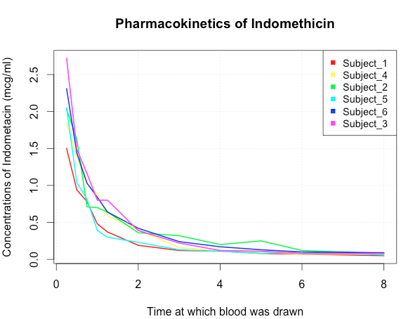
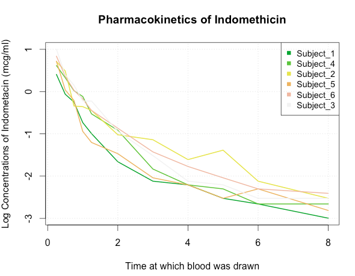
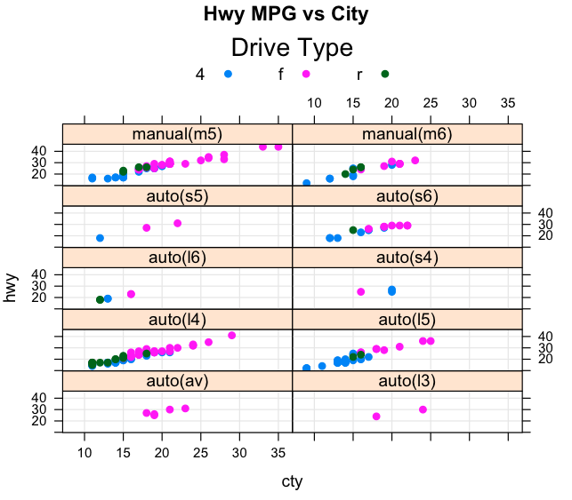
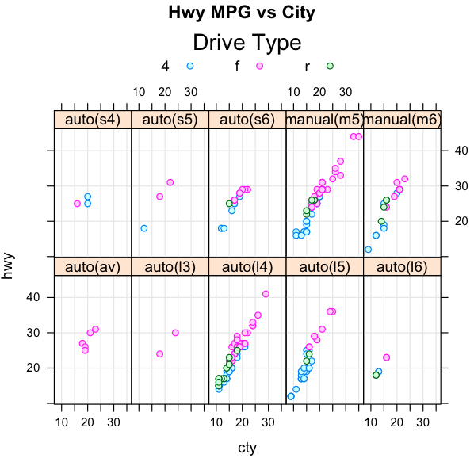

The purpose of this exercise is to plot some information relating to the Indometh data set which is provided to you as part of R. You will be writing a function that does a line plot of the concentration of Indometacin observed in the blood over time. Each line will represent a different subject (and color) thus you will need a legend so users of your function can distinguish between the lines. You will also allow users of your function to specify a "log"" argument that, if TRUE, would first take the natural logarithm of the concentration before making the plot. This helps make the decline in concentrations over time more apparent. Note that the log transformation will apply only to the concentration - NOT the time. Users can also supply a vector of colors. The default is to use 6 colors from the rainbow palette. A shell for the function, including default arguments, would look like:
plot.indometh <- function(log=FALSE,colors=rainbow(6)) {
# INPUT: log=FALSE a T/F value. If TRUE then first take the log of the
# concentration before rendering the plot
#
# colors - a vector of valid color values corresponding to the colors to be used
# for each subject
(your code goes here)
}
Here are two ways that your function could be called. Make sure that the y axis accurately
reflects the value of the log=TRUE argument IF it has been specified. Make sure you have six colors. That
is, error check the number colors to be sure you have enough to uniquely color each of the
subjects.
plot.indometh() | plot.indometh(log=TRUE,color=terrain.colors(6)) |
|  |  |
Here is the help information for the Indometh data set
Indometh package:datasets R Documentation
Pharmacokinetics of Indomethacin
Description:
The ‘Indometh’ data frame has 66 rows and 3 columns of data on the
pharmacokinetics of indometacin (or, older spelling,
‘indomethacin’).
Usage:
Indometh
Format:
An object of class ‘c("nfnGroupedData", "nfGroupedData",
"groupedData", "data.frame")’ containing the following columns:
Subject an ordered factor with containing the subject codes. The
ordering is according to increasing maximum response.
time a numeric vector of times at which blood samples were drawn
(hr).
conc a numeric vector of plasma concentrations of indometacin
(mcg/ml).
Details:
Each of the six subjects were given an intravenous injection of
indometacin.
Please refer to the following plot. Use Base Graphics to construct a replica of the graphic. Please provide R expressions that will generate the plot. Explore the options and arguments available to you in the boxplot command. You will need to read in the Deer data set to be used when creating the graph.
url <- "http://steviep42.bitbucket.org/bios545r_2016/DATA.DIR/Deer.txt" deer <- read.table(url,header=T,sep=",") # Some observer guys measured the length of groups of Deer who were living # on 24 different Farms located throughout Spain head(deer) Farm Month Year Sex clas1_4 LCT KFI Ecervi Tb 1 AL 10 0 1 4 191 20.45 0.00 0 2 AL 10 0 1 4 180 16.40 0.00 0 3 AL 10 0 1 3 192 15.90 2.38 0 4 AL 10 0 1 4 196 17.30 0.00 0 5 AL 10 0 1 4 204 NA 0.00 NA 6 AL 10 0 1 4 190 16.30 0.00 0 >
The numbers in red in the top margin are the number of observations in the box plot beneath it. You can get this information from the the call to the boxplot function itself. Refer to the lab / lecture for more information.
The color scheme in the boxplot is produced by creating a Color Ramp which in this case ranges from Green to Blue. Do some research on creating a "Color Ramp" to create a graduated color scheme as in the plot. Do *not* pick your colors by hand or hardcode the colors yourself.
Please refer to the plots below. Use the lattice package to construct replicas of the graphics. You are plotting the hwy (highway) mileage vs cty (city) mileage for each value of the drv (drive) category. You should provide a function named mympg() that we can call to reproduce the plots. Here is a shell of the function with some default arguments. Note that you should check that the layout makes sense. In other words given that there are 10 unique values for the drive variable you should do some error checking on the layout vector to insure the layout is possible. For example a layout of c(3,7) would not be possible. Legal values would be any wherein the product of the two elements is 10.
mympg <- function(layout=c(2,5),pch=19) {
# INPUT: layout - a vector that specifies either 2 columns and 5 rows
# or 5 rows and 2 columns
# pch - a plot character value (See example(pch) )
#
# OUTPUT: a lattice scatterplot
Your code goes here
}
# Error check the layout
mympg(layout=c(3,9))
Error in mympg(layout = c(3, 9)) :
Sorry - the layout numbers must be integers and their product must equal 10
To work this problem correctly look at the various arguments for the lattice commands. Download the file as below and read it in using read.csv
url <- "http://steviep42.bitbucket.org/YOUTUBE.DIR/mpg.csv"
download.file(url,"mpg.csv")
mpg <- read.csv(url,header=T,sep=",")
> head(mpg)
manufacturer model displ year cyl trans drv cty hwy fl class
1 audi a4 1.8 1999 4 auto(l5) f 18 29 p compact
2 audi a4 1.8 1999 4 manual(m5) f 21 29 p compact
3 audi a4 2.0 2008 4 manual(m6) f 20 31 p compact
4 audi a4 2.0 2008 4 auto(av) f 21 30 p compact
5 audi a4 2.8 1999 6 auto(l5) f 16 26 p compact
6 audi a4 2.8 1999 6 manual(m5) f 18 26 p compact
Fuel economy data from 1999 and 2008 for 38 popular models of car
Description:
This dataset contains a subset of the fuel economy data that the
EPA makes available on . It contains
only models which had a new release every year between 1999 and
2008 - this was used as a proxy for the popularity of the car.
Format:
A data frame with 234 rows and 11 variables
• manufacturer.
• model.
• displ. engine displacement, in litres
• year.
• cyl. number of cylinders
• trans. type of transmission
• drv. f = front-wheel drive, r = rear wheel drive, 4 = 4wd
• cty. city miles per gallon
Here are two examples of calling the mympg() function. We should be able to reproduce these plots using your code and by using the arguments specified in the call to the function. Note that the overall size does not have to match what you see on this web page. As you develop your code it will be displayed in the graphics panel of R Studio which is smaller than what you see here. However, the legend title, plot character, and layout should be identical.
mympg() | mympg(layout=c(5,2),pch=21) |
|  |  |
012014.csv, 022014.csv,...,122014.csvThe format of each file is the same although the data values will be different. The content relates to weather data for the zipcode 30322, (the Emory zip code), as recorded by the online weather service Wunderground. Here are the fields contained within each file. The relevant fields for your function are EDT, (the date of the measurement), Mean.TemperatureF, ( the Mean temperature for that given date), and MeanDew.PointF, (the Mean Dew point for that given date).
[1] "EDT" "Max.TemperatureF" [3] "Mean.TemperatureF" "Min.TemperatureF" [5] "Max.Dew.PointF" "MeanDew.PointF" [7] "Min.DewpointF" "Max.Humidity" [9] "Mean.Humidity" "Min.Humidity" [11] "Max.Sea.Level.PressureIn" "Mean.Sea.Level.PressureIn" [13] "Min.Sea.Level.PressureIn" "Max.VisibilityMiles" [15] "Mean.VisibilityMiles" "Min.VisibilityMiles" [17] "Max.Wind.SpeedMPH" "Mean.Wind.SpeedMPH" [19] "Max.Gust.SpeedMPH" "PrecipitationIn" [21] "CloudCover" "Events" [23] "WindDirDegrees"
You will be writing a function called weather that will use the .csv files as input. The weather function will accept three arguments:
Here are some suggested steps that might help you organize the flow of your function:
Your function will label the x axis accordingly. That is, it will flexibly handle ranges of dates. Use the following two examples as models. You will need to divide the time ranges into 6 intervals. There is a hard way to do this and an easy way. You already know a function that can help you with this although you can use whatever method you want. The gird lines MUST match up with the X labels. The horizontal grid lines must match the examples also.
weather("2014-01-15","2014-02-28","~/Downloads/weatherdat")
weather("2014-01-01","2014-12-31","~/Downloads/weatherdat")